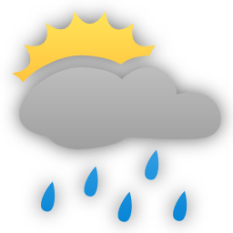
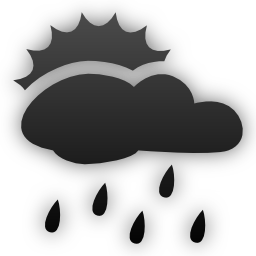

The Weather Desklet can retrieve weather data from several online weather
services and display them on your Cinnamon desktop in
a neat way. It comes with a choice of icons and plenty of options
for configuring how it looks, and for those who like to keep an eye on the
weather in several locations it supports multiple instances. At present it
can work with data from the
BBC,
Yahoo! Weather,
Open Weather Map,
Weather Underground,
World Weather Online,
forecast.io and
weather.com (The Weather Channel).
By default the forecast will be refreshed approximately every thirty minutes. You can always force a refresh by clicking the refresh button at the bottom right. Hovering over the icons in the forecast area will show a brief descriptions of the forecast, whilst clicking on the current weather icon or the credit link at the bottom of the desklet will take you to a more detailed forecast for your area.
Right click on the desklet and select 'Configure...' to enter the configuration screen.
Select the sevice you wish to use to provide weather data. Note that some services require you to obtain an API key by registering with them.
The Location must be specified as a code and these codes are specific to the service that you are using. Below are notes on each of the services supported.
To find your location code visit the BBC Weather site and search for your city. The code you need is the numeric part at the end of URL for the city's weather. For example, a search for London takes you to:
http://www.bbc.co.uk/weather/2643743
The Location code is therefore 2643743.
This is the original Open Weather Map driver that works with OWM's 16 day forecast API. This API is no longer available on free accounts.
Visit the Open Weather Map and search for your city. The code you need is the numeric part at the end of URL for the city's weather. For example, a search for Chicago takes you to:
http://openweathermap.org/city/4887398
The Location code is therefore 4887398.
You can also give a latitude and longitude. These
should be decimals, separated by a comma, with positive being north or east. For example, for
central London, 51.51N, 0.13W, use 51.51,-0.13.
Open Weather Map requires an API Key. To obtain an API Key for Open Weather Map register on the Open Weather Map website.
This OWM driver (contributed by Kallys) works with OWM's 5 day forecast API, which is available on free accounts. As the forecasts are 3 hourly the driver has to do some approximating to come up with a daily forecast.
Locations are specified in the same way as for the original Open Weather Map driver
Open Weather Map Free requires an API Key. To obtain an API Key for Open Weather Map register on the Open Weather Map website.
Unfortunately Yahoo! is no longer supported because of an incompatible change to the Yahoo! API
Visit Yahoo! Weather and search for your city. The code you need is the numeric part at the end of URL for the city's weather. For example, a search for Berlin takes you to:
http://weather.yahoo.com/deutschland/bundesland-berlin/berlin-638242/
The Location code is therefore 638242.
You can also give a latitude and longitude. These
should be decimals, separated by a comma, with positive being north or east. For example, for
central London, 51.51N, 0.13W, use 51.51,-0.13.
Weather Underground requires an API key. You can obtain a free developer API key here. Weather Desklet uses the 10 day forecast data, so you will need to get at least the Cumulus Plan.
There are several ways to specify the location for Weather Underground. For locations in
the USA you can simply use a zip code. You can also give a latitude and longitude. These
should be decimals, separated by a comma, with positive being north or east. For example, for
central London, 51.51N, 0.13W, use 51.51,-0.13.
You can also specify locations as Country/City, eg France/Paris,
or within the USA as State/City, eg TX/Houston. You should
check that your proposed location works by visiting the website, eg
http://www.wunderground.com/q/France/Paris
If you search for your city on wunderground.com and are taken to URL of this form:
http://www.wunderground.com/q/zmw:00000.16.03541
use the section following the q, eg zmw:00000.16.03541. If you
are taken to a URL with a station ID such as:
http://www.wunderground.com/global/stations/03541.html
you can convert this to a zmw code by taking the station number (03541 in this case)
and prefixing it with zmw:00000.1. to give
zmw:00000.1.03541
World Weather Online requires an API key.
WWO no longer offer new keys for this free API. The service has been replaced by APIXU.
Locations can be specified as a US zipcode, a UK or Canadian post code, or as a latitude and longitude.
Latitude and longitude should be given as decimals, separated by a comma, with positive being north or east. For example, for
central London, 51.51N, 0.13W, use 51.51,-0.13.
World Weather Online premium requires an API key. You can register for an API key here. A free trial key is available, after which payment is required.
Locations can be specified as a US zipcode, a UK or Canadian post code, or as a latitude and longitude.
Latitude and longitude should be given as decimals, separated by a comma, with positive being north or east. For example, for
central London, 51.51N, 0.13W, use 51.51,-0.13.
APIXU requires an API key. You can register for a free API key from here.
Locations can be specified using a wide range of formats. The most reliable is as a latitude and longitude.
Latitude and longitude should be given as decimals, separated by a comma, with positive being north or east. For example, for
central London, 51.51N, 0.13W, use 51.51,-0.13. You can also use a US zipcode, a UK or Canadian
postcode, or a city name. The location auto:ip can be used to automatically guess your location
based on your IP address. Three character IATA airport codes can be given in the format iata:BHX.
Forecast.io (now Dark Sky) requires an API key. You can register for a free API key here.
Locations must be specified as a latitude and longitude.
Latitude and longitude should be given as decimals, separated by a comma, with positive being north or east. For example, for
central London, 51.51N, 0.13W, use 51.51,-0.13.
Location codes for the weather.com service can be looked up here.
Please note that the weather.com XML feed used has officially been retired. You should treat the weather.com service as deprecated and likely to stop working at any time.
meteoblue requires an API key. You can register for a free API key here. The Weather Desklet needs the Free JSON API (json_7day_3h_firstday).
Locations must be specified as a latitude and longitude.
Latitude and longitude should be given as decimals, separated by a comma, with positive being north or east. For example, for
central London, 51.51N, 0.13W, use 51.51,-0.13.
Select the period between refreshing forecasts. The default of 30 minutes should be adequate for most purposes. Please consider the impact of lower refresh times on the service provider's servers and do not use lower refresh periods unless you have a very good reason. In order to comply with the terms of use of some providers Weather Desklet will override low settings in some cases and enforce a minimum.
These settings allow you to use an alternative source for text displayed for the location. They are particularly useful for those whose language is not English.
By default the text is provided by the weather data service. If the service does not provide translations of city names, using names provided by Google may do so. As a last resort you can manually enter a city name.
These are settings that should be used with caution.
This setting allows you change the point on the desklet that is anchored. This point remains fixed as the desklet grows or shrinks. It is useful if you wish to place the desklet close to a screen edge. By default the desklet is anchored to the top left corner, so for example, if you place the desklet in the bottom right of your screen a long weather text may cause it to grow beyond the edge of the screen. By anchoring to the bottom right of the desklet this problem is avoided
However, Cinnamon's drag and drop functionality for desklets does not cope with a change of anchors. You will find drag and drop behaves oddly if you use this option and you will probably have difficulty positioning the desklet just where you want it. I recommend that when dragging and dropping you always grab the desklet by the top left corner. It's still weird, but slightly less so!
Most of the other settings should be obvious - just experiment. Please note, however, that not all services support all settings. For example, some support only a limited number of days of forecast, or do not support humidity or pressure. If you change the configuration and the display doesn't seem to change, it's probably because the service you have selected does not support the new options. See the list of service capabilities for details.
Here's a sample of what the different icon sets look like, or view the full icon sets here.
|  | Colourful | Light |  | Dark | Novacon | VClouds | Meteocon 1 | ||||
| Flat colouful | Flat white | Flat black | Weezle | Sketchy | Meteocon 2 |
There are details of how to use your own icons in the Weather Desklet on the project wiki, or in the README file in the icons/user directory of the Weather Desklet's installation directory
The Weather Desklet provides partial support for languages other than English. The messages displayed by the Weather Desklet come from two different sources
Some data services provide translations of their weather data. Where these are available in one of the preferred languages configured for your desktop, they will be used. The following services support translations. Click on the link to find out which languages are supported:
Note that although forecasts are translated, names of localities may not be. In this case you may wish to look at the Location display settings.
The Weather Desklet supports translation of most of the internal messages, and some forecast messages from services that do not support translated forecasts themselves. We have a small but growing number of translations contributed by users. If you are a native speaker of a language that we don't yet have a translation for, why not help out? Find out more about translating the Weather Desklet.
The Weather Desklet is written by Chris Hastie and released under the GNU General Public License version 3. It was originally a fork of Loganj's AccuWeather Desklet, which is released under the “use it as you like” license. Copyright © 2014–2018 Chris Hastie, 2013 Loganj. The Open Weather Map Free driver was contributed by Kallys.
The desklet makes use of the marknote xml library, which is Copyright © 2011 jbulb.org and redistributed under the terms of Apache Licence, Version 2.0.
Your name could be here! Find out how to contribute a translation.
Alternative city name lookups are provided by Google.